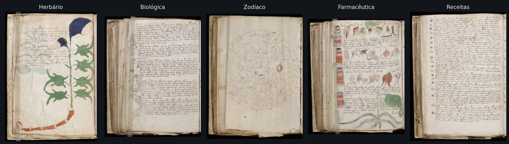
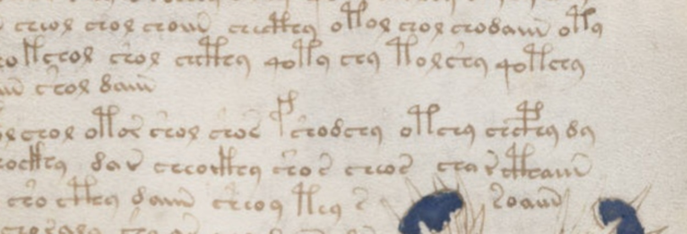
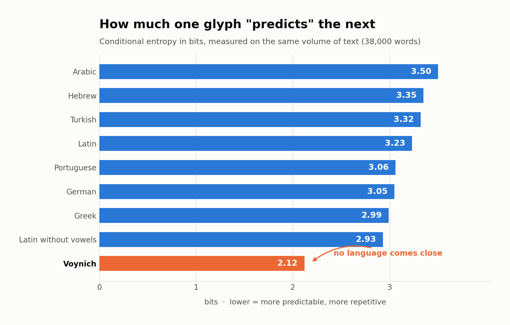
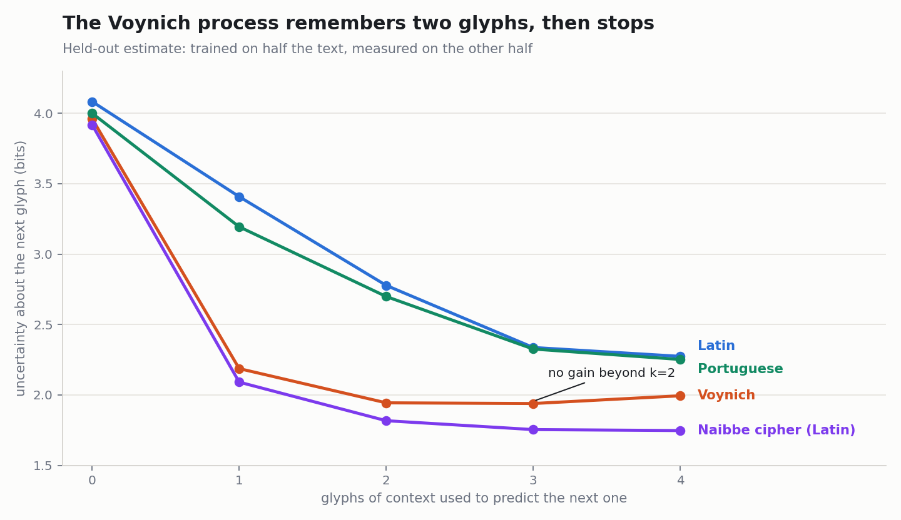
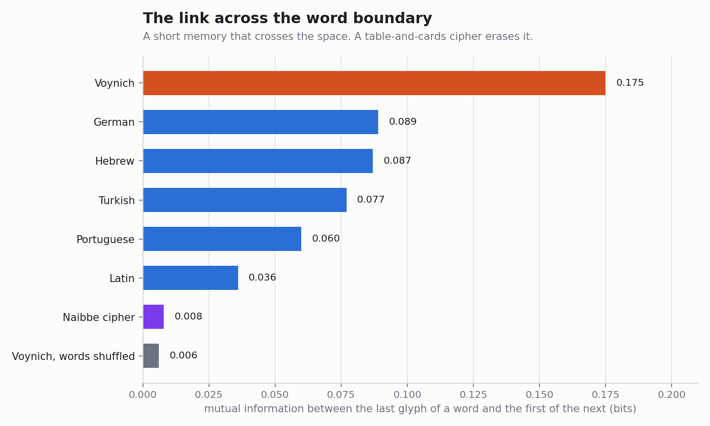
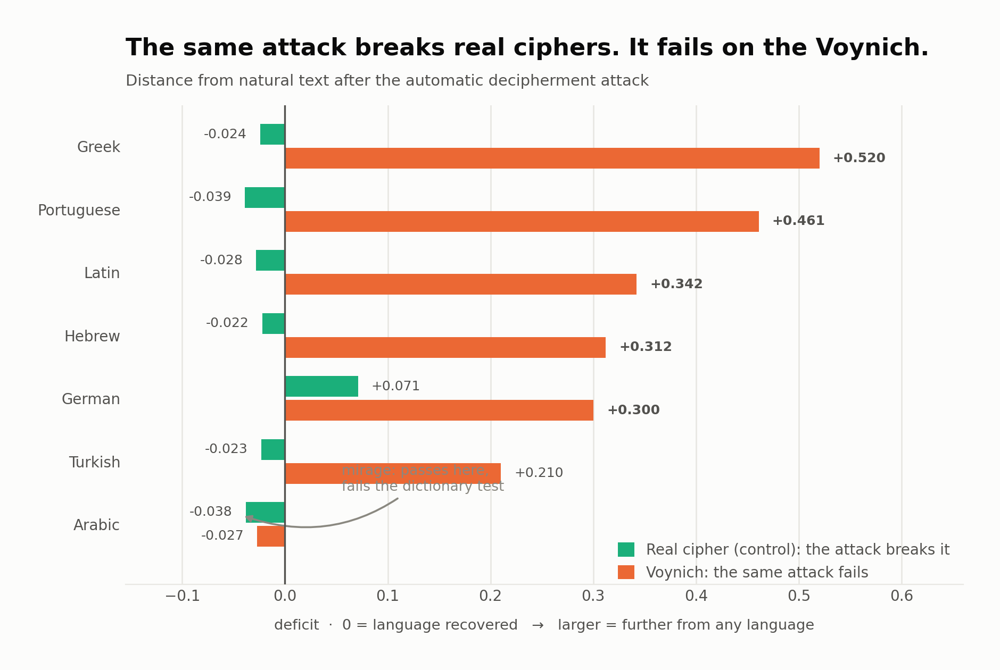
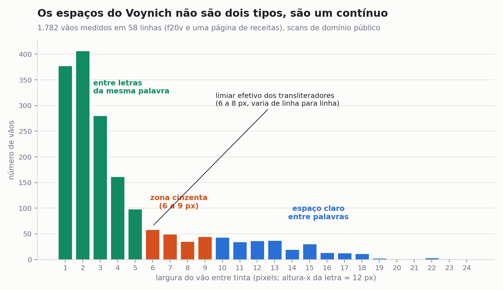
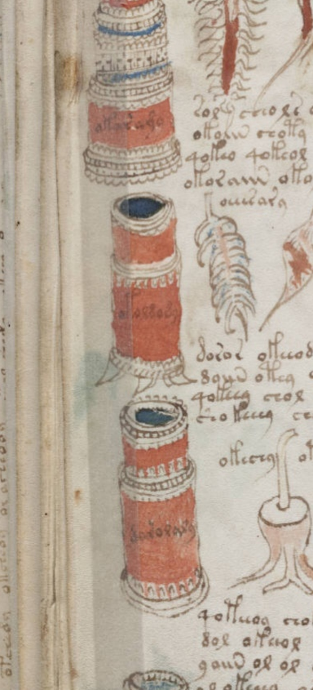

Eighty experiments on the Voynich manuscript
The text of the world's most famous undeciphered book behaves like something written from habit rather than from meaning: each glyph chosen from the two before it, one word in twenty-five copied from the line above, every line starting fresh. Not a language, not a cipher of a language that any of our tools can see. One part of the book escapes that description: the labels next to the drawings.
In one sentence: after eighty tests, the Voynich text is statistically indistinguishable from a process with three rules, a short habit (each glyph depends on the two before it), occasional copying of a nearby word, and a page-by-page mood; it has no dictionary beyond that habit, no page has vocabulary of its own, and the only words that behave like names are the labels attached to the drawings.
1. What the manuscript is
The Voynich manuscript is a vellum codex of about 240 pages held at Yale's Beinecke Library, written in an alphabet that appears nowhere else, illustrated with plants that match no known species, naked women in pools connected by pipes, zodiac wheels, and pages of jars and roots. Radiocarbon dating of the vellum (University of Arizona, 2009) places it between 1404 and 1438; the inks and pigments are consistent with that period (McCrone Associates, 2009). Its glyphs are built from the repertoire of a fifteenth-century Latin scribe: the sign that closes most words is the medieval abbreviation for the ending -us; the "8" is a cursive d.

Its documented history is better than its reputation suggests. In 1599 Emperor Rudolf II bought it in Prague from Karl Widemann of Augsburg for 600 Rhenish florins, a transaction found in the Geizkofler family archives by Stefan Guzy; earlier accounts of "600 ducats" were hearsay. Jacobus Horčický de Tepenec, the court apothecary, signed the first folio (visible only under ultraviolet light). In 1639 the alchemist Georg Baresch wrote to the Jesuit polymath Athanasius Kircher asking for help; in 1665 Johannes Marcus Marci sent the book to Kircher with the letter that still accompanies it. It sat in Jesuit libraries in Rome until 1912, when the book dealer Wilfrid Voynich bought it, later inventing a castle discovery story. H. P. Kraus bought it in 1961 for 24,500 dollars, failed to resell it, and donated it to Yale in 1969. The real gap is 1438 to 1599: about 160 years without a known owner.

2. The rule: nothing counts without a control
Every test in this project was run in the same way. First on real texts (Latin, Portuguese, German, Hebrew, Greek, Turkish, Arabic, Finnish, Hungarian, Basque, Nahuatl) and on those texts enciphered with the method under test, to see what the measurement gives when we know the answer. Then on the manuscript. A number without its control is not a finding; several of the "discoveries" of the last century were controls that nobody ran. The transliteration used is the Zandbergen-Landini EVA file from voynich.nu (34,119 words of paragraph text, 7,266 distinct, 172,869 glyphs, 4,111 lines, 207 pages), cross-checked against the Glen Claston v101 transliteration. Where a result depended on how the glyphs were counted, it was recounted under five alternative segmentations, including one chosen by an algorithm to favour the hypothesis under test.
3. What the text is
3.1 Far more predictable than any language
The conditional entropy of a glyph given the previous one is 2.12 bits. For the same measure, Latin gives 3.23, Portuguese 3.06, German 3.05, Greek 2.99, and Hebrew, Turkish and Arabic between 3.3 and 3.5; the lowest natural language found was Nahuatl at 2.77, chronologically impossible for a European book of 1420. This is not an artifact of the transliteration: an algorithm allowed to merge glyphs in whatever way raises the entropy most takes the manuscript from 2.12 to 2.81 after twelve merges, but the same procedure takes Latin from 3.32 to 3.86 (the value differs by a tenth from the chart because the control runs use different slices of the corpus; every table reports the value of its own control run). The gap survives every reading of the alphabet.

3.2 Rich vocabulary, no repeated phrases
Low entropy is not repetition. The text has 7,266 distinct words in 34,119 (type-token ratio 0.213, in the range of Latin). Pairs of words repeat constantly ("s aiin" 55 times, "or aiin" 54). Yet only one sequence of four words appears twice in the whole book, no sequence of five words ever repeats, and none of the 4,111 lines repeats. Latin of the same length has 289 repeated five-word sequences, the commonest fourteen times. Every real text repeats its formulas. This one never does, at any spacing: with all spaces removed, twenty-glyph strings repeat 75 times against 2,018 in Latin.
3.3 A memory of two glyphs
Knowing the two previous glyphs reduces the uncertainty about the next one from 3.96 to 1.94 bits. Knowing the third makes no difference at all (1.94). Latin keeps improving out to four letters of context because it has morphology and syllable structure. The Voynich process has neither: it is, statistically, a second-order chain over glyphs, with the space treated as one more glyph.

3.4 The link across the word boundary, and where it dies
The last glyph of a word and the first glyph of the next share 0.175 bits of information, two to five times more than in any language tested (Latin 0.036, German 0.089). Specific pairs carry it: a word ending in y is followed by one starting with q far more than chance, and almost never by one starting with a. The link is robust to the 8% of spaces the transliterators marked as uncertain (0.146 to 0.168 under alternative treatments), and it disappears completely across a line break (0.232 within a line, 0.048 across one, against a noise floor of 0.035). In Latin the line break is invisible. In the manuscript every line starts from nothing.

3.5 No dictionary above the habit
This is the decisive test against the best academic argument for meaning. Lindemann and Bowern (Yale) showed that the manuscript's word-level statistics, the ratio of distinct words, the share of the commonest ones, fall inside the range of natural languages, and read that as evidence of content. We trained a three-glyph chain on each corpus and compared the word statistics of the generated text with the real ones.
| corpus | distinct / total, real | chain | types after 34k, real | chain | generated words that exist in the real text |
|---|---|---|---|---|---|
| Voynich | 0.213 | 0.217 | 7,250 | 7,371 | 85% |
| Latin | 0.205 | 0.356 | 6,975 | 12,122 | 53% |
| Portuguese | 0.116 | 0.208 | 3,969 | 7,094 | 72% |
In Latin and Portuguese a letter chain gets the word statistics wrong: it invents half its words and doubles the vocabulary, because a language has a lexicon, and the lexicon is information that three-letter habits do not contain. In the manuscript the glyph chain gets every word statistic right, and 85% of what it invents is already in the book. There is no lexicon above the habit. The word-level statistics cannot be evidence of meaning here, because a memoryless-beyond-three-glyphs process produces them.
The same absence shows at the level of grammar. Given the previous word, the best guess for the next one is right 2.2% of the time (12.0% in Portuguese, 9.3% in Latin). Word order carries almost nothing.
4. What it is not
4.1 Ciphers that our attacks break, and that fail here
A hill-climbing solver with trigram scoring recovers 92 to 100% of a text enciphered by simple substitution in Latin, Hebrew, Greek, German, Turkish, Arabic or Portuguese. Pointed at the manuscript with each of those languages as the assumed plaintext, it converges to nonsense: log-likelihood deficits of 0.21 to 0.52 per glyph against the controls. Arabic looked like an exception until two negative controls were run: the solver also "reads" a scrambled Voynich as Arabic, and the words it produced are real Arabic words 20% of the time against 60 to 90% for the controls. A mirage.

Also eliminated, each with its control: polyalphabetic substitution; abjad (vowel-less) writing; scribal abbreviation systems; a Cardan grille (55 geometries and seven realistic candidates; the surviving positions are statistically indistinguishable from the masked ones); null glyphs; syllabic tables; ordered anagrams; a sorted word list; a numeric table; column transposition; reversal; words as single letters; words as syllables; Friedman's a priori taxonomic language; steganography in word lengths, line lengths or initial letters.
4.2 The honest retraction
The first version of this work presented the low entropy and the absence of repeated phrases as proof that no message exists. That was wrong. In December 2025 Michael Greshko published in Cryptologia the Naibbe cipher, a verbose homophonic substitution that can be worked by hand with fifteenth-century materials: the plaintext is respaced into one- and two-letter pieces, each replaced by a glyph string drawn from one of six tables chosen with playing cards. We took his published implementation and enciphered real Latin:
| measure | Voynich | Naibbe (Latin) | raw Latin |
|---|---|---|---|
| entropy given previous glyph | 2.119 | 2.061 | 3.322 |
| repeated four-word sequences | 1 | 5 | 615 |
| repeated five-word sequences | 0 | 0 | 289 |
| word equal to the previous one | 281 | 100 | 12 |
| neighbours one glyph apart | 4.5% | 1.5% | 0.3% |
| memory of the line above (excess) | +0.019 | −0.007 | 0.000 |
| boundary link (bits) | 0.175 | 0.008 | 0.036 |
A real Latin text, enciphered by a method feasible in 1420, reproduces the entropy and the absence of repeats. Those two numbers therefore prove nothing about meaning. What the cipher does not reproduce is the local self-similarity: the manuscript copies. Words are near-identical to the one before three times more often, and a word has a near-copy in the line directly above 24.9% of the time against 23.0% for lines further up (bootstrap interval +1.5 to +2.4 points; Latin flat; Portuguese shows a smooth topical decay with no spike at the line above). The effect appears in every section and in both of Currier's "languages". The cipher also has no boundary link at all, because the card draw erases the memory between words. Giving the cipher a rule that ties the next table to the last glyph restores the link but brings back repeated phrases and kills the variety: in that whole family the two properties are antagonistic, and no setting reaches the manuscript's combination of both.
5. A model with three rules
Since the process has a two-glyph memory, the obvious null model is a glyph chain of order two or three, trained on the text itself with the space as a symbol. It was then scored on ten measures, none of which it was fitted to except the first.
| measure | Voynich | order-3 chain | chain + 4% local copying |
|---|---|---|---|
| entropy given previous glyph | 2.12 | 2.12 | 2.16 |
| distinct words / total | 0.213 | 0.219 | 0.224 |
| share of the 20 commonest words | 20.3% | 21.2% | 20.9% |
| repeated four-word sequences | 1 | 1 | 0 |
| boundary link (bits) | 0.175 | 0.174 | 0.150 |
| predictability of the space | 77.6% | 75.6% | 75.4% |
| word equal to the previous one | 281 | 129 | 399 |
| neighbours one glyph apart | 4.5% | 2.4% | 4.2% |
| memory of the line above | +0.019 | 0.000 | +0.024 |
The chain alone reproduces the entropy, the vocabulary, the concentration, the absence of long repeats, the boundary link and the space. What it misses are exactly the three copying signals, and 4% of words copied from the previous word or the line above, with one glyph altered, supplies them. Out of sample, the model also matches the word-length distribution (0.018 bits of divergence; Latin 0.27), vocabulary growth (3,179 types after 10,000 words against 3,256), the Zipf slope (−1.05 against −1.04) and the coverage of the commonest words.
5.1 The third rule: each page has a mood
The model failed one out-of-sample test. The manuscript has long-range correlations of the kind found in natural texts (detrended fluctuation exponent 0.66 to 0.68; Latin 0.61, Portuguese 0.58; a memoryless chain 0.49). Shuffling the words within each page does not change the exponent (0.683); shuffling the lines does not (0.678); shuffling the order of the pages does not (0.715). The correlation lives entirely at the level of the page: each page has its own mix, and neither the order inside it nor the order between pages matters. Copying from anywhere on the page does not create it. A page-specific bias in the glyph preferences, constant while the page lasts, does: with a moderate bias the exponent rises to 0.60 to 0.68 while the rest of the battery holds.
Is that page effect content? A herbal names its plant on the plant's page. We counted words that appear three or more times on one page and nowhere else in the book: Latin cut into the same pages gives 0.20 per page, Portuguese 0.10, the manuscript 0.00. Not one word in 207 pages. The page effect is spread across all the habits, not concentrated in any word. It is the hand changing mood between pages, not the page changing subject.
5.2 The recipe
How many rules generate the book? An order-two table covering 95% of the text has 1,228 entries for the manuscript and 2,246 for Latin. Sixty-three building blocks cover 95% of the text (Latin needs 67, but uses 3.3 per word where the manuscript uses 2.2). Words are one block (26%), two (45%) or three (20%), always in the same order: an opener (qok, qot, ok, ot, ch, sh, che), an optional middle (ee, e, o, d, s), a closer (aiin, ain, edy, y, ar, or, al, dy, am). Some blocks are whole words and are the commonest words in the book: daiin (767 times alone), ol, chedy, aiin, shedy. The rules a scribe would need: q only opens a word and always takes o (97.7%, broken 121 times in 5,336); n and m only close (97.7%, 95.4%); choose the next block from the last two glyphs; at each point one option is favoured (58% on average) and two or three alternatives exist; forget the previous line when starting a new one; once in twenty-five words copy a neighbour with one glyph changed. The shape of those choices, a favourite winning 58% of the time, is the same as the output of a weighted deck of cards, and different from Latin (42%). A weighted table or an internalised habit; the statistics cannot tell them apart.

6. The workshop
Lisa Fagin Davis identified five scribal hands in 2020 from letterforms. The text confirms and refines it. A model of one hand's word structure applied to another's costs 0.31 bits per glyph; between languages it costs 2.40; between chapters of one Portuguese book 0.22. Five people, one system, personal accents. The accents track the hand more than the topic: within the herbal section alone, hand 1 is separable in 77 of 78 pages while hands 2, 3 and 5 blur together, and the statistical jumps between consecutive pages coincide with Davis's hand changes (divergence 0.237 against 0.104 within a hand, permutation p < 0.0003). Hand 1's version of the system lacks the "ed" pieces entirely (0.0% of words); the others use them in 13 to 21%. Two versions of one method, which Currier called languages A and B in 1976. Davis also showed that hands 1 and 2 alternate by bifolium, the folded sheet, not by page: each scribe took a sheet. Within a scribe and a section there is no drift from beginning to end: no learning, no fatigue, six indicators flat.
The drawings came first. Words adjacent to a drawing change shape: before one they are shorter (4.2 glyphs against 5.0) and three times more likely to start with d; after one, q initials fall from 17% to 4% and the tall gallows glyphs almost vanish (permutation p < 0.001). Yale's multispectral imaging, published by Davis in 2024, found on folio 93r that the text runs over a spilled pigment stain: drawing and paint before writing. The text was fitted to the space left. And no device turned in rhythm: the choices show no periodicity at any lag from 2 to 80 words, and the gaps between uses of the same block are burstier than chance (coefficient of variation 1.2 to 1.5 against 0.95), not regular.
7. The exception: the labels

1,119 words sit next to drawn objects: stars, nymphs, plant parts, jars, the segments of circular diagrams. They behave differently from the running text on every count. They are more unique (74% distinct against 56% in a size-matched sample, z = 13.9; the 40 labels of the circular diagrams are 40 different words), longer (5.6 to 6.8 glyphs against 5.1), and they carry a marker: 61% of the zodiac labels and 39 to 45% of the others begin with o followed by a gallows glyph, against 12% of running words, a convention shared by all the hands. Only 5.5% of them reappear in the text of their own page; in a real herbal the jar's name is what the paragraph repeats. Half the plant labels never occur anywhere in the running text (79% expected for ordinary words of the same lengths), and the missing ones are less regular constructions than the text's habit produces. The zodiac labels do not encode position: the label in slot 7 of Aries is no more like the label in slot 7 of Taurus than a random pair (edit distance 0.716 against 0.723; one identical pair in 833). And they are not Latin or Italian names in simple substitution: a solver that recovers 99.9% of a control list of enciphered Latin words reaches 12.6% on the labels, below the 14.9% it reaches on nonsense.
What remains: a separate list, almost every item unique, written in the same alphabet with a class marker and looser rules. That is how a list of names behaves. It is also how a second, label-specific technique would behave. What can be excluded is that they are simply more of the same generator.
8. What remains open
A Naibbe-class cipher. If the text is a verbose homophonic cipher of that kind, the message could be about 9,000 Latin words long and would be invisible to every statistic above by design. We built the attack a cryptanalyst would: without the key, the cipher's structure can be learned from the ciphertext (110 of 137 single-letter tokens, 88% of the two-letter splits and 111 of 138 prefixes recovered on Greshko's own control). Assigning letters to the resulting 462 symbols is where it stops: three solvers (simulated annealing, context clustering, and an HMM with expectation-maximisation in the manner of Knight) reach 15%, 3% and 24% letter accuracy on the control, against 8% by chance and 90% needed to read. The information is there (the true key scores far better than any solution found); the search is the obstacle, as it was for the Zodiac 340 with only 63 symbols. Pointed at the manuscript, the same tools fit Latin and Italian no better than they fit a text generated by the chain. That is compatible with "not a Latin cipher of this kind", but since the control was not broken, no conclusion is claimed. open
The ring on folio 57v. The only place where glyphs are listed in sequence rather than assembled into words: seventeen signs repeated four times around a circle. Eight of them are essentially absent from the text (v occurs once, x 22 times, four signs never), and six of the twelve commonest text glyphs are absent from the ring. Whatever it is, it is not the alphabet the text was written in. closed
Parallels. Nothing else combines an illustrated codex, an invented script, 170,000 glyphs of fluent text without repeats and a five-scribe workshop. Each ingredient has relatives: the procedurally generated tables of the Book of Soyga (whose rule Jim Reeds recovered in 1998) and Trithemius's word tables (1499, 1518); the pseudo-Kufic and pseudo-Hebrew inscriptions Italian painters used in the same decades to evoke sacred writing; glossolalia, fluent and phonologically structured and without lexicon or grammar; Serafini's Codex Seraphinianus (1981), an admitted asemic encyclopedia; and the Rohonc Codex, the closest sibling as an object, whose text, by contrast, is repetitive and has been proposed to be a code of Christian texts. Gordon Rugg's 2004 table-and-grille method and Torsten Timm's 2019 self-citation model are the two published mechanisms this work quantifies.
9. Reproduce it
Everything is in the repository: the experiment scripts (experiments/exp49.py to exp80e.py, plus the earlier attack and entropy code), the numerical results as JSON, the figures, and a fetch script for the data. The transliteration is downloaded from voynich.nu (Zandbergen-Landini EVA and Glen Claston v101, used with attribution); the comparison corpora from the christos-c bible-corpus and Project Gutenberg; the Naibbe implementation from Michael Greshko's repository; the scans from the Internet Archive. Python 3.11 with numpy, scipy, matplotlib, opencv and pandas is enough. Most experiments run in seconds; the solvers of experiment 80 take minutes each.
git clone https://github.com/<user>/voynich-experiments cd voynich-experiments pip install -r requirements.txt bash scripts/fetch_data.sh cd experiments && python3 exp65.py # memory length, ~1 min
If you find an error, open an issue with the experiment number. If you build a solver that breaks the Naibbe control, the manuscript is waiting.
10. Sources
- René Zandbergen, The Voynich Manuscript site and transliterations: voynich.nu.
- Lisa Fagin Davis, "How Many Glyphs and How Many Scribes? Digital Paleography and the Voynich Manuscript", Manuscript Studies 5.1 (2020); "Multispectral Imaging and the Voynich Manuscript", Manuscript Road Trip, 2024.
- Michael A. Greshko, "The Naibbe cipher: a substitution cipher that encrypts Latin and Italian as Voynich Manuscript-like ciphertext", Cryptologia (2025), doi:10.1080/01611194.2025.2566408; code at github.com/greshko/naibbe-cipher.
- Christophe Parisel, "Evidence of Layered Positional and Directional Constraints in the Voynich Manuscript" (arXiv:2604.19762, 2026) and "A Quantitative Confirmation of the Currier Language Distinction" (arXiv:2604.25979, 2026).
- Claire Bowern and Luke Lindemann, "The Linguistics of the Voynich Manuscript", Annual Review of Linguistics 7 (2021); Luke Lindemann, "Crux of the MATTR: Voynichese Morphological Complexity" (CEUR-WS 3313).
- Torsten Timm and Andreas Schinner, "A possible generating algorithm of the Voynich manuscript", Cryptologia 44 (2020); Gordon Rugg, "An elegant hoax? A possible solution to the Voynich manuscript", Cryptologia 28 (2004); Prescott Currier, papers of 1976 at voynich.nu.
- Marcelo Montemurro and Damián Zanette, "Keywords and co-occurrence patterns in the Voynich manuscript", PLoS ONE 8 (2013).
- Jim Reeds, "John Dee and the Magic Tables in the Book of Soyga" (written 1998, published 2006); Levente Zoltán Király and Gábor Tokai, "Cracking the code of the Rohonc Codex", Cryptologia 42 (2018).
- Scans: Internet Archive, public domain; high-resolution images at the Beinecke Library, Yale.